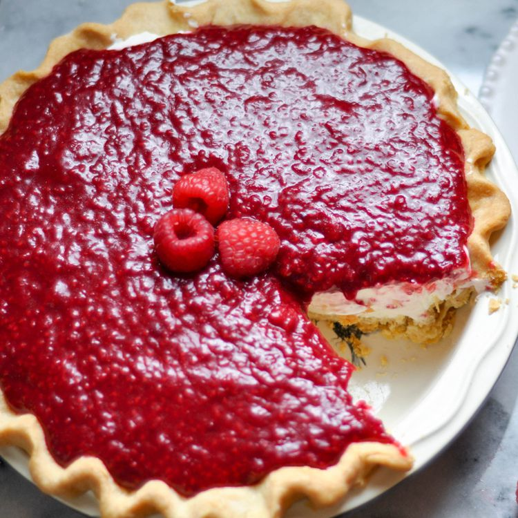

Home
Raspberry Cream Pie

This pie has a tender, flaky crust. Filled with a fluffy sweet cream and topped with a tart raspberry jam.
Ingredients
- 1 recipe unbaked pie crust
Raspberry Topping
- ¼ cup white sugar
- 1 tablespoon cornstarch
- 1 (12 ounce) package frozen raspberries
- 1 ½ tablespoons water
- 1 ½ tablespoons lemon juice
- 1 tablespoon butter
- ½ teaspoon vanilla extract
Cream Filling
- 1 ½ cups heavy cream
- 1 (8 ounce) package cream cheese, softened
- ¾ cup powdered sugar
- 1 tablespoon vanilla extract
- ½ cup sour cream
Steps
- Preheat the oven to 350 degrees F (175 degrees C).
- Roll out pie crust and gently lay inside a 9-inch pie dish. Lightly press the dough into the corners and
sides of the dish to help prevent shrinkage. Prick the bottom of the pie crust a few times with a fork. Line
the bottom with foil or parchment and fill with dried beans or pie weights.
- Bake in the preheated oven for 20 minutes. Remove lining and beans or weights and continue baking until
crust is golden brown, about 15 minutes more. Let cool completely.
- Meanwhile, whisk sugar and cornstarch together in a medium saucepan. Stir in raspberries, water, and lemon
juice. Bring to a boil, stirring constantly. Boil until thickened, about 5 minutes. Remove from heat; stir
in butter and vanilla extract. Set aside to cool.
- Pour heavy cream into the bowl of a stand mixer fitted with the whisk attachment. Beat on medium speed
until stiff peaks form. Transfer to another bowl.
- Combine cream cheese, powdered sugar, and vanilla extract in the stand mixer bowl. Switch to the paddle
attachment and beat until well combined, about 2 minutes. Fold in whipped cream and sour cream until evenly
incorporated.
- Spread cream filling into the cooled pie crust. Top with the cooled raspberry topping. Refrigerate pie
until thoroughly chilled, 2 hours to overnight.